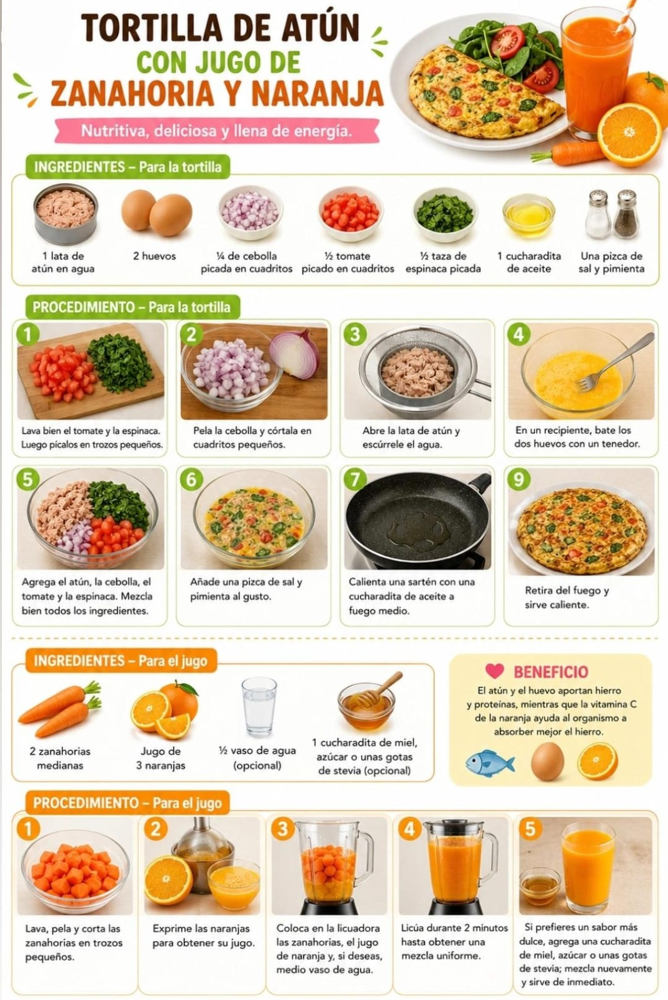
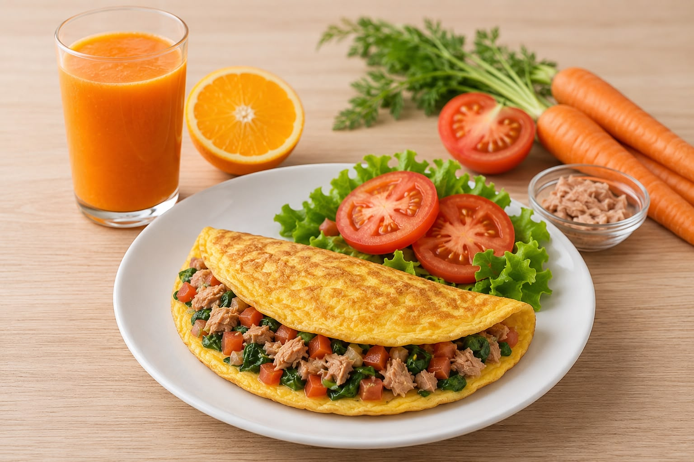

Tortilla de atún con jugo de zanahoria y naranja
Ingredientes
- 1 lata de atún en agua
- 2 huevos
- ¼ de cebolla picada
- ½ tomate picado
- ½ taza de espinaca
- 1 cucharadita de aceite
- Sal y pimienta
- 2 zanahorias
- Jugo de 3 naranjas
Preparación
- Mezcla el atún con los huevos, cebolla, tomate y espinaca.
- Cocina en una sartén con aceite hasta dorar ambos lados.
- Licúa las zanahorias con el jugo de naranja.
- Sirve la tortilla acompañada del jugo.
Beneficio: El atún y el huevo aportan hierro y proteínas; la vitamina C de la naranja mejora la absorción del hierro.
Imagen Referencial
